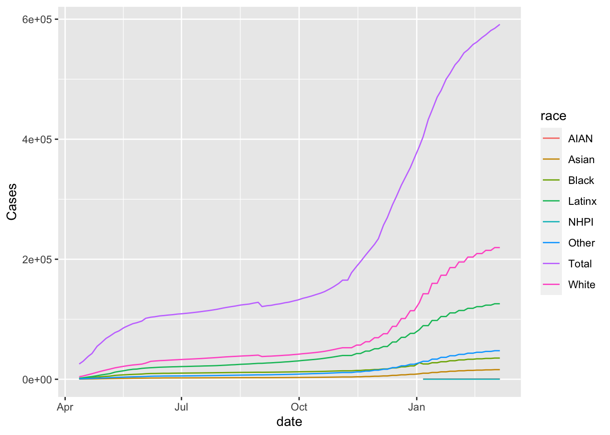
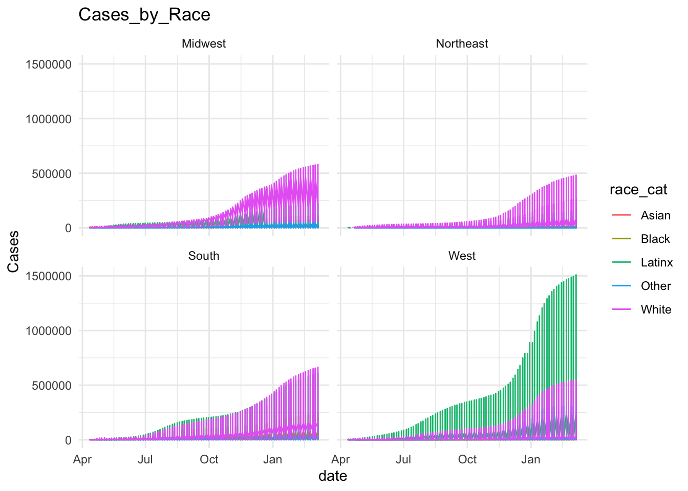
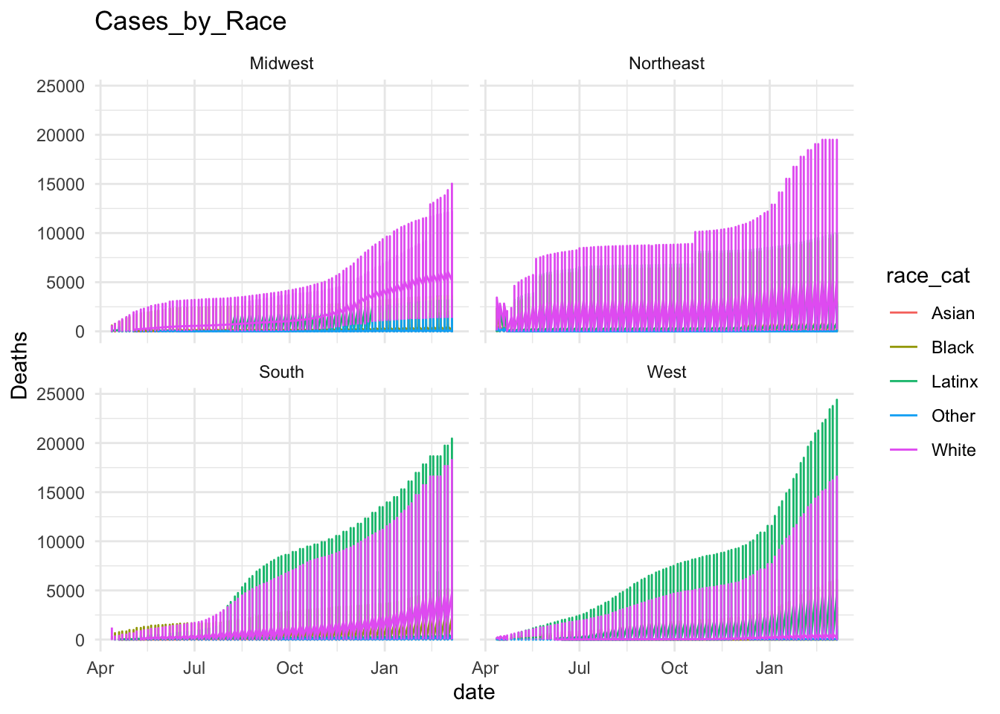

Today, we’ll be working with a data set related to COVID. This data is based on data from the the COVID Tracking Project. I cleaned up this data and also added total populations from the 2020 for each of the relevant categories. Note, due to differences in the way race and ethnicity are encoded in the census as compared to the the COVID Tracking Project, the population counts for LatinX may be somewhat inaccurate.
library(tidyverse)
── Attaching core tidyverse packages ──────────────────────── tidyverse 2.0.0 ──
✔ dplyr 1.1.2 ✔ readr 2.1.4
✔ forcats 1.0.0 ✔ stringr 1.5.0
✔ ggplot2 3.4.3 ✔ tibble 3.2.1
✔ lubridate 1.9.2 ✔ tidyr 1.3.0
✔ purrr 1.0.2
── Conflicts ────────────────────────────────────────── tidyverse_conflicts() ──
✖ dplyr::filter() masks stats::filter()
✖ dplyr::lag() masks stats::lag()
ℹ Use the conflicted package (<http://conflicted.r-lib.org/>) to force all conflicts to become errors
I’ve include 4 different data sets. They all have the same data but have it represented in different ways. Try using the different data sets and see which ones are good for making which plots.
ggplot(covid_data_count, aes(x = date, y = Cases)) +geom_point()
If you want to only look at a specific state, you can do it like this. For now, see what you can do just using ggplot.
covid_data_count |>filter(state =="MA") |>ggplot(aes(x = date, y = Cases, color = race)) +geom_line()

Write code for a plot and describe what you observe?
data <- covid_data_countsummary(data)
date state race state_name
Min. :2020-04-12 Length:33008 Length:33008 Length:33008
1st Qu.:2020-07-08 Class :character Class :character Class :character
Median :2020-09-30 Mode :character Mode :character Mode :character
Mean :2020-09-28
3rd Qu.:2020-12-20
Max. :2021-03-07
population Cases Deaths Hosp
Min. : 412 Min. : 0 Min. : 0 Min. : 0
1st Qu.: 62993 1st Qu.: 726 1st Qu.: 15 1st Qu.: 80
Median : 413171 Median : 4737 Median : 113 Median : 494
Mean : 2170620 Mean : 50686 Mean : 1381 Mean : 3892
3rd Qu.: 2114512 3rd Qu.: 29976 3rd Qu.: 1001 3rd Qu.: 2925
Max. :55117875 Max. :3501394 Max. :54124 Max. :89995
NA's :1385 NA's :3091 NA's :22369
Tests
Min. : 0
1st Qu.: 6685
Median : 39011
Mean : 569293
3rd Qu.: 269030
Max. :49646014
NA's :28677
table(data$state)
AK AL AR AZ CA CO CT DC DE FL GA HI IA ID IL IN KS KY LA MA
752 475 727 665 854 842 714 764 671 456 761 565 636 697 803 579 681 661 657 606
MD ME MI MN MO MS MT NC ND NE NH NJ NM NV NY OH OK OR PA PR
569 709 665 812 613 638 582 634 434 549 663 568 656 623 569 760 552 744 460 87
RI SC SD TN TX UT VA VT WA WI WV WY
699 480 623 621 570 750 684 560 855 595 396 722
# including PR;Puerto Rico, s in total 52 states are shown# categorize race as (White, Black, Latinx, Asian, Other)data$race_cat <-ifelse(data$race %in%c("Total", "White", "Black", "Latinx", "Asian"), data$race, "Other")table(data$race_cat)
Asian Black Latinx Other Total White
4417 4722 2358 11931 4854 4726
# categorize states into 4 regions (Northeast, Midwest, South, West)# Puerto Rico included into South regiondata <- data %>%mutate(region =ifelse(state_name %in%c("Connecticut", "Maine", "Massachusetts", "New Hampshire", "Rhode Island","Vermont", "New Jersey", "New York", "Pennsylvania" ), "Northeast",ifelse(state_name %in%c("Illinois", "Indiana", "Michigan", "Ohio", "Wisconsin","Iowa", "Kansas", "Minnesota", "Missouri", "Nebraska", "North Dakota","South Dakota" ), "Midwest",ifelse(state_name %in%c("Delaware","District of Columbia", "Florida", "Georgia", "Maryland", "North Carolina","South Carolina", "Virginia", "West Virginia", "Alabama", "Kentucky","Mississippi", "Tennessee", "Arkansas", "Louisiana", "Oklahoma", "Texas" ), "South",ifelse(state_name %in%c("Arizona", "Colorado", "Idaho", "Montana", "Nevada", "New Mexico","Utah", "Wyoming", "Alaska", "California", "Hawaii", "Oregon","Washington", "Puerto Rico" ), "West", "Unknown" )))) )table(data$region)
Midwest Northeast South West
7750 5548 10316 9394
# create short data set where case and deaath are summed up by region/race_cat# How do I create a dataset with a date column, a race column, a region column, a number of infections column, and a number of deaths column, and then merge the columns so that for each date, if the race and region are the same, the number of infections and deaths are added together?p_case <- data %>%filter(race_cat %in%c ("White", "Black", "Latinx", "Asian","Other")) %>%ggplot(aes(x = date, y = Cases, color = race_cat)) +geom_line() +labs(title ="Cases_by_Race") +facet_wrap(~region) +theme_minimal()p_case

p_death <- data %>%filter(race_cat %in%c ("White", "Black", "Latinx", "Asian","Other")) %>%ggplot(aes(x = date, y = Deaths, color = race_cat)) +geom_line() +labs(title ="Cases_by_Race") +facet_wrap(~region) +theme_minimal()p_death

Are there any conclusions you can draw?
In all four regions, both the number of cases and deaths are increasing from April 2020 to March 2021, with particularly sharp increases around summer 2020 and January 2021. In all four regions, whites account for a larger proportion of cases and deaths when compared among races, but characteristically, in the West region, Latinos account for a larger proportion of cases than whites, and Latinos account for a larger proportion of deaths than in the other regions.
What were you not able to do due to not having the R knowledge?
The analysis after grouping by race and state does not proceed due to lacking my skill to create a data set that merges the rows so that the number of cases and deaths are added together if the race and region are the same on each date.
What other data would be useful to better understand this data?
With basic information such as age and gender, the comparison of infection trends in the patient background can be analyzed in more detail. In addition, when considering the burden on medical institutions, we should collect not only the number of infections or deaths, but also the number of severely ill patients, which is important when considering policies for the maintenance and support of medical institutions. Information on vaccination history would also be helpful.